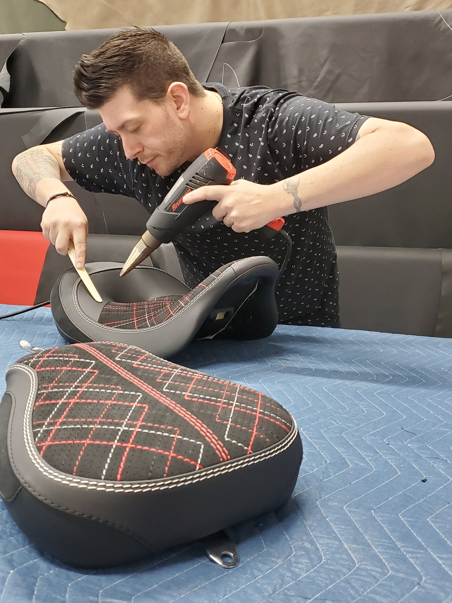
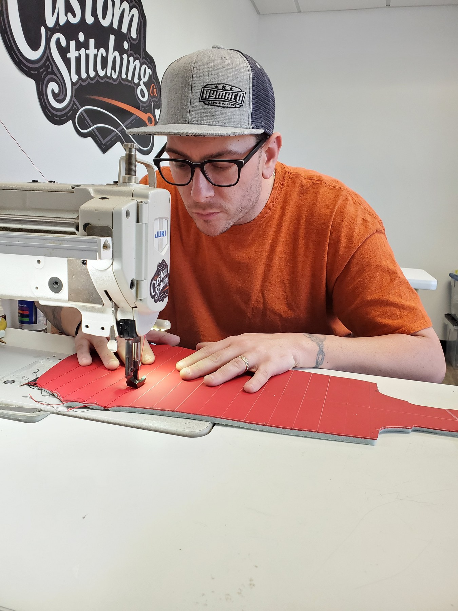
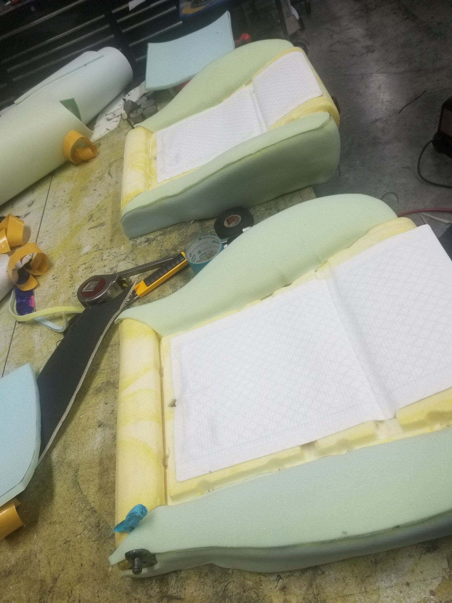
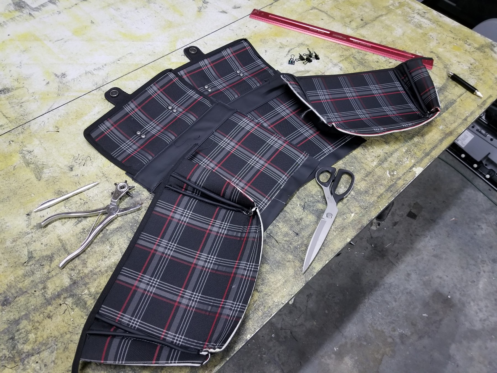
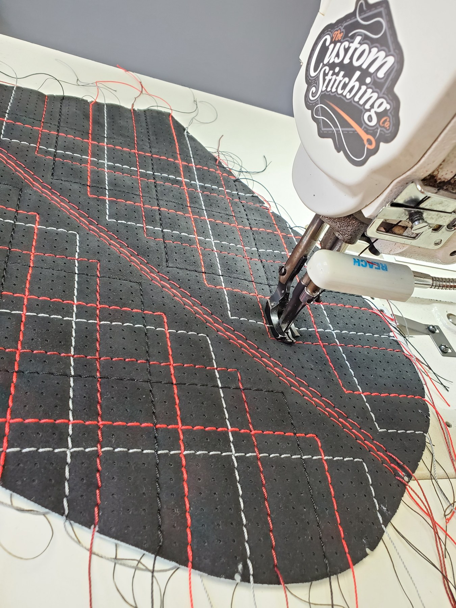
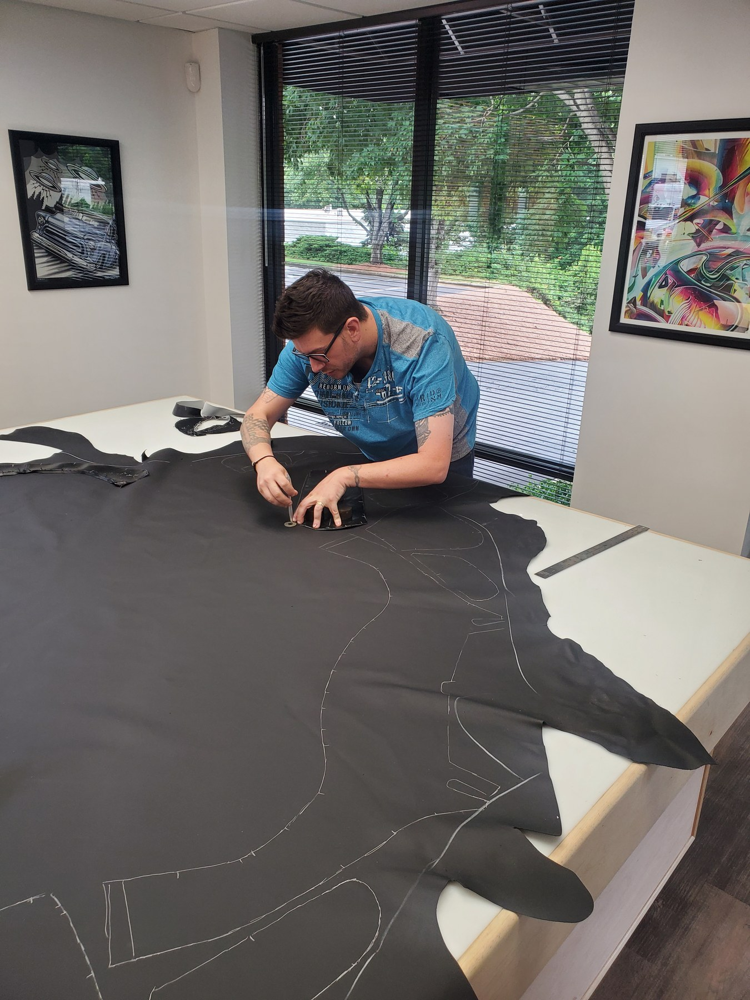
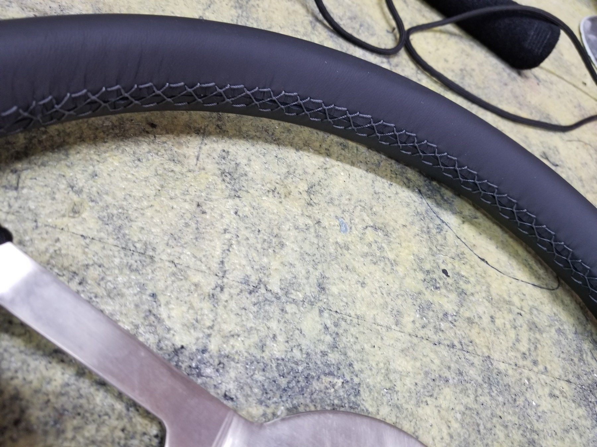
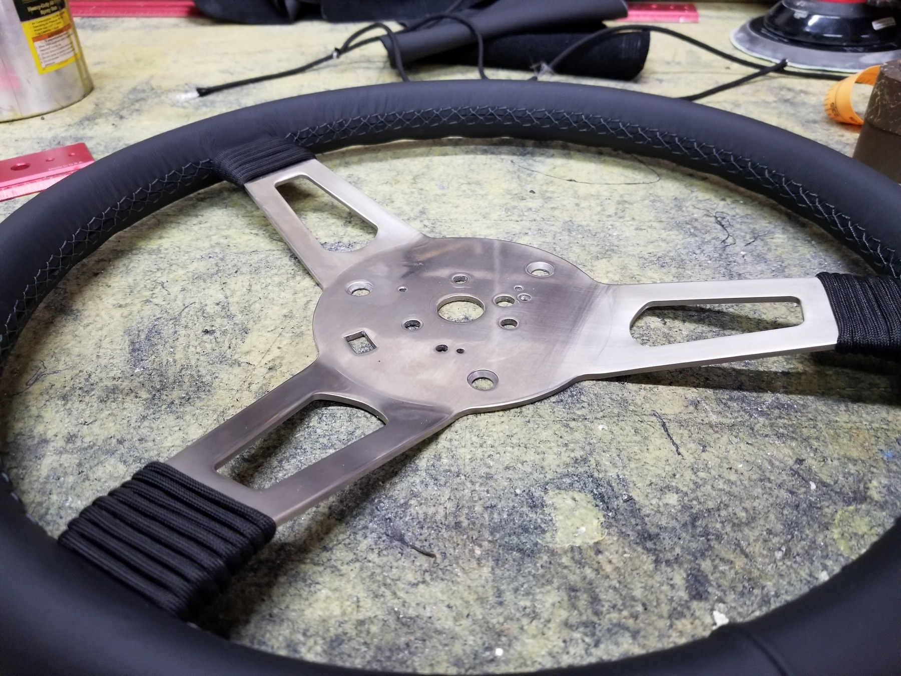
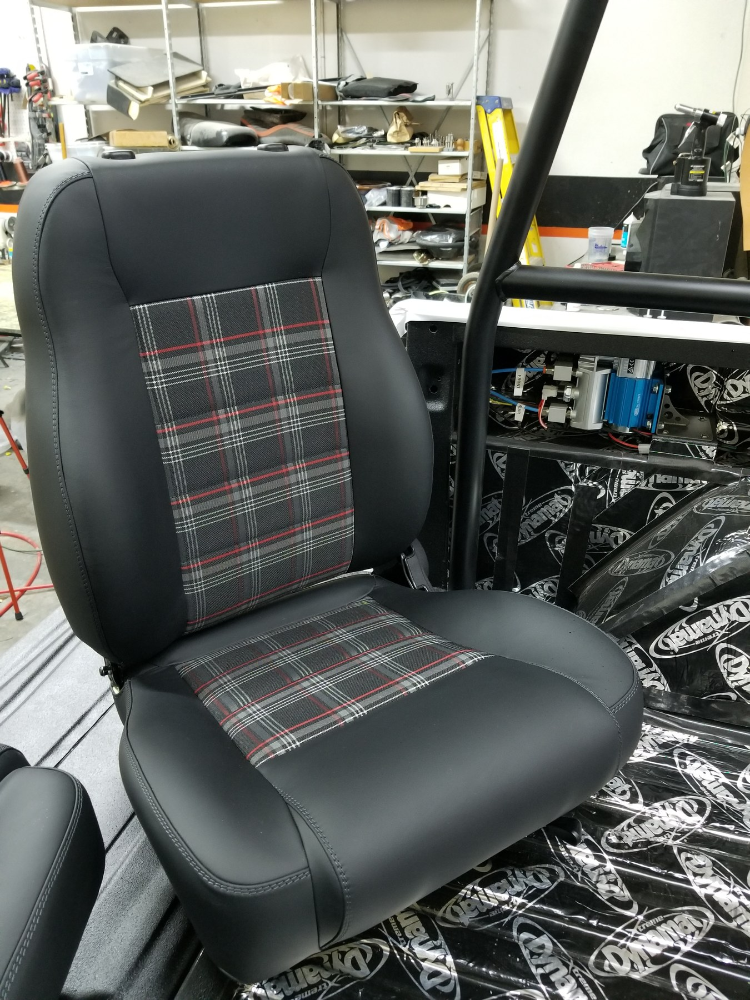
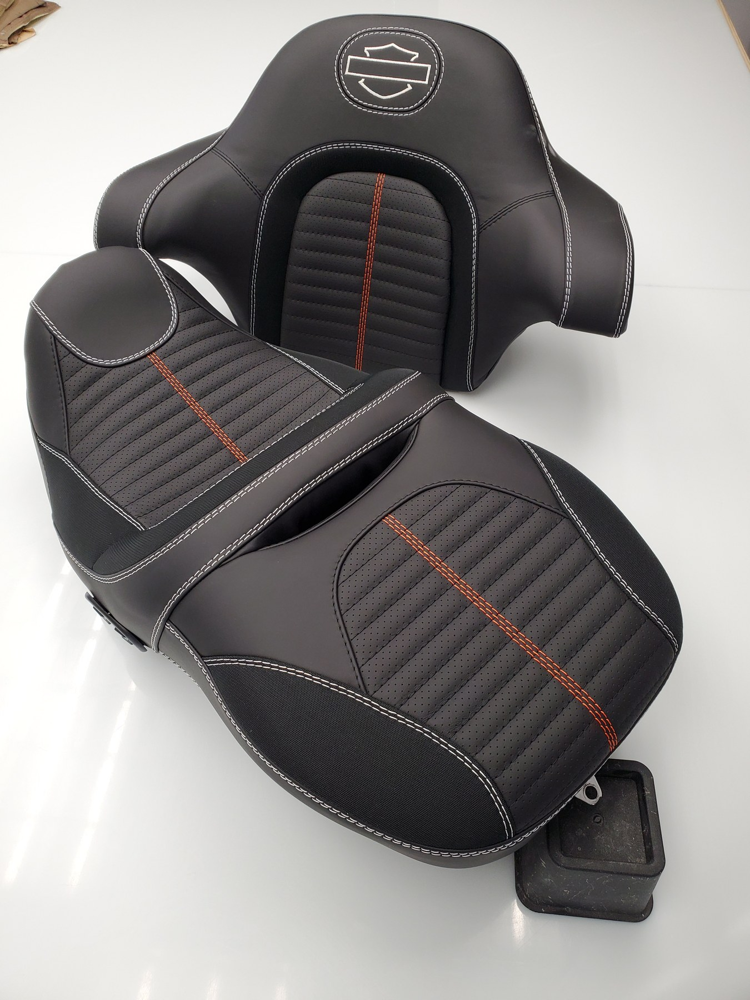

Soft Goods & Physical Product Development
A hands-on body of work spanning material behavior, foam and substrate development, patternmaking, sewing construction, prototype iteration, surface quality, craftsmanship, and repeatable production.



Understanding the product from the material outward.


Turning flexible materials into controlled geometry.


The visible surface is the result of decisions underneath it.


Build, evaluate, adjust, repeat.
Different products. The same material discipline.


Preserving quality while creating a process others can execute.
Process Development
Converted individual craft knowledge into defined, staged manufacturing operations that could be taught and repeated.
Team Execution
Trained and coordinated a multidisciplinary team while maintaining direct technical involvement in production and quality.
Product Scale
Balanced high-end quality expectations with repeat-production needs, wholesale demand, scheduling, and consistent execution.